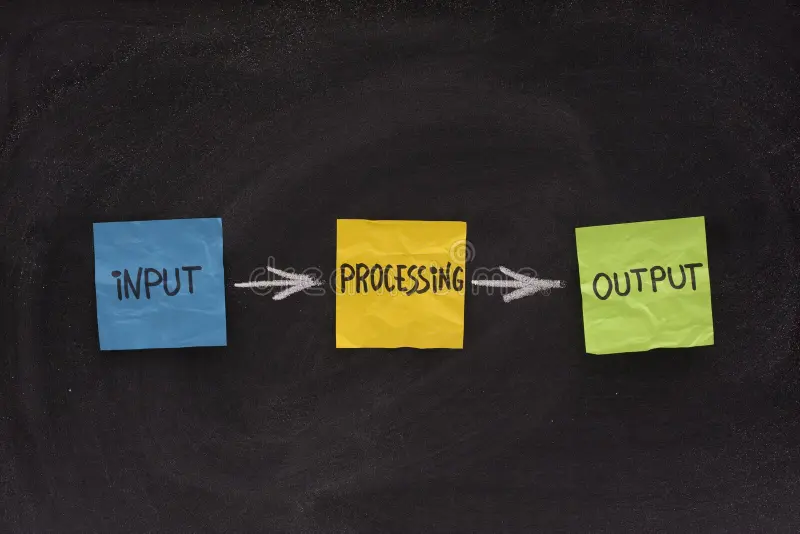

Invoer
Met de invoer van een laptop wordt bedoeld, alles wat je aan de laptop verteld of geeft De invoer kan van alles betekenen, maar voordat een laptopiets kan doen, moet hij informatie krijgen in de vorm van invoer.
Verwerking
Na de invoer komt de verwerking. De laptop verwerkt de ontvangen informatie. De laptop maakt in deze stap berekeningen, beslissingen en voert de opdracht uit.
Uitvoer
De laatste stap is de uitvoer. De uitvoer is het uiteindelijke resultaat van de gegeven opdracht. Bij de uitvoer gaat het om de manier waarop de laptop de opdracht aan jou laat zien.
